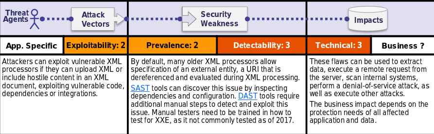

Is the Application Vulnerable?
Applications and in particular XML-based web services or downstream integrations might be vulnerable to attack if:
•The application accepts XML directly or XML uploads, especially from untrusted sources, or inserts untrusted data into XML documents, which is then parsed by an XML processor.
•Any of the XML processors in the application or SOAP based web services has document type definitions (DTDs)enabled. As the exact mechanism for disabling DTD processing varies by processor, it is good practice to consult a reference such as the OWASP Cheat Sheet 'XXE Prevention’.
•If your application uses SAML for identity processing within federated security or single sign on (SSO) purposes. SAML uses XML for identity assertions, and may be vulnerable.
•If the application uses SOAP prior to version 1.2, it is likely susceptible to XXE attacks if XML entities are being passed to the SOAP framework.
•Being vulnerable to XXE attacks likely means that the application is vulnerable to denial of service attacks including the Billion Laughs attack.
How to Prevent
Developer training is essential to identify and mitigate XXE. Besides that, preventing XXE requires:
•Whenever possible, use less complex data formats such as JSON, and avoiding serialization of sensitive data.
•Patch or upgrade all XML processors and libraries in use by the application or on the underlying operating system. Use dependency checkers. Update SOAP to SOAP 1.2 or higher.
•Disable XML external entity and DTD processing in all XML parsers in the application, as per the OWASP Cheat Sheet 'XXE Prevention'.
•Implement positive ("whitelisting") server-side input validation, filtering, or sanitization to prevent hostile data within XML documents, headers, or nodes.
•Verify that XML or XSL file upload functionality validates incoming XML using XSD validation or similar.
•SASTtools can help detect XXE in source code, although manual code review is the best alternative in large, complex applications with many integrations.
If these controls are not possible, consider using virtual patching,API security gateways, or Web Application Firewalls (WAFs) to detect, monitor, and block XXE attacks.
Example Attack Scenarios
Numerous public XXE issues have been discovered, including attacking embedded devices. XXE occurs in a lot of unexpected places, including deeply nested dependencies. The easiest way is to upload a malicious XML file, if accepted:
Scenario #1: The attacker attempts to extract data from the server:
<?xml version="1.0" encoding="ISO-8859-1"?><!DOCTYPE foo [<!ELEMENT foo ANY ><!ENTITY xxeSYSTEM "file:///etc/passwd" >]><foo>&xxe;</foo>
Scenario #2: An attacker probes the server's private network by changing the above ENTITY line to:<!ENTITY xxeSYSTEM "https://192.168.1.1/private" >]>
Scenario #3: An attacker attempts a denial-of-service attack by including a potentially endless file:<!ENTITY xxeSYSTEM "file:///dev/random" >]>